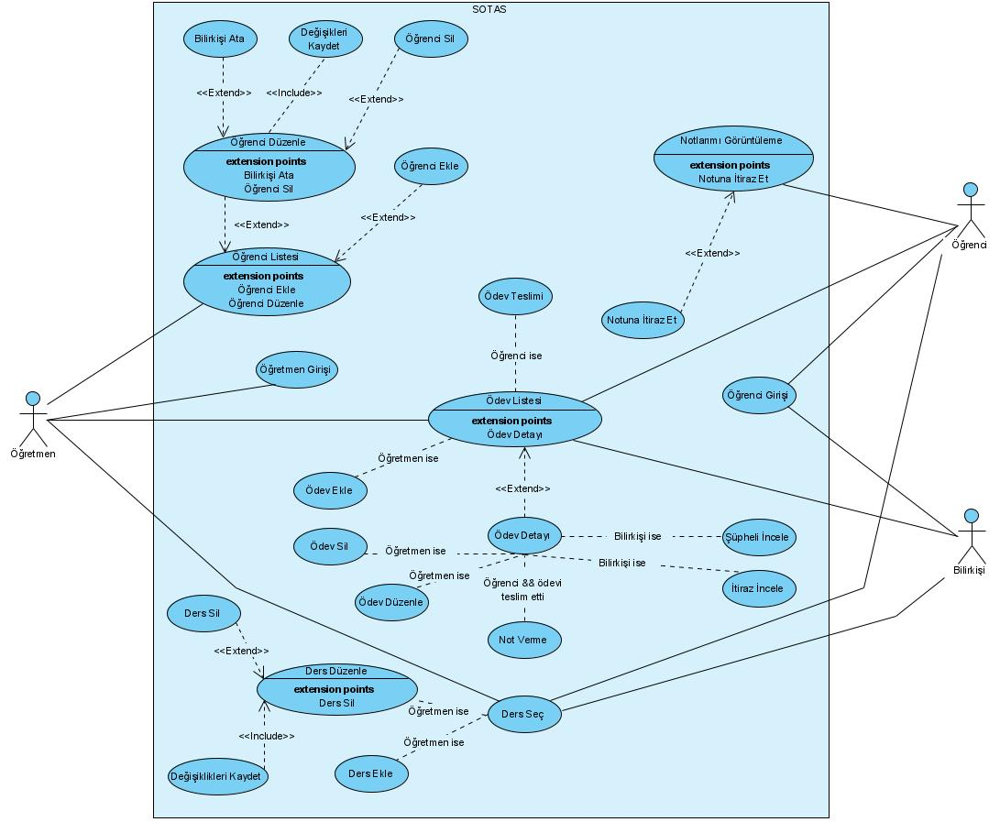
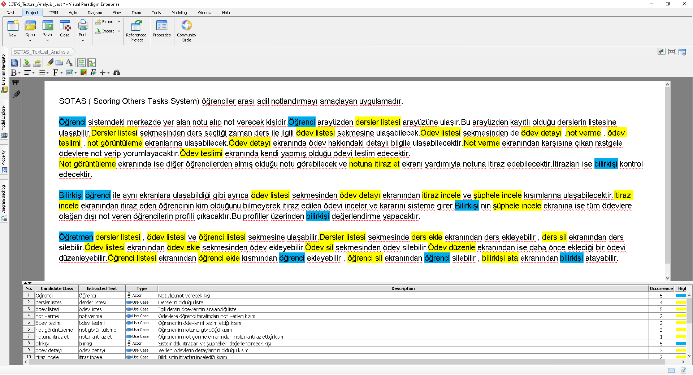

Problem
- Sınıfta çok fazla öğrenci var
- Öğretmenin herbir öğrencinin ödevini kontrol etmesi kolay değil
- Öğrencilerin, diğer öğrencilerden ödevleri için geri dönüş alabilecekleri bir ortam bulunmuyor
Çözüm
- Ödevleri öğrenciler kendi aralarında değerlendirecek ve notlandıracak
- Öğretmen sadece ödevleri belirleyecek, ihtiyaç halinde notlandırmaya müdahale edebilecek
SOTAS Nedir?
Scoring Others' Tasks System
SOTAS, klasik not verme sistemine alternatif daha kolay ve adil bir çözüm getirme hedefini taşır. Yazılım, dağıtık not verme sistemi mantığını kullanır ve bu sayede öğrencilerin de öğretim görevlisinin yerine not verme sürecine katılmasını amaçlar.
Kullanılan Teknolojiler
Backend
- JAVA
- Quarkus
- GraalVM
- SQLite
Frontend
- Angular
- Typescript
- HTML
- CSS, SCSS
Workflow
- Jetbrains Spaces
- Git
- Discord
Requirement Diagramı

Use-Case Diagramı

Textual Analysis

Ekip Olarak Projeyi Nasıl Yürütmeyi Planlıyoruz?
20 kişi oldukça fazla bir sayı ve doğru şekilde kordine olunması gerekiyor. Bunun için ekibimizi mikro ekiplere bölmeyi kararlaştırdık. Frontend ve Backend şeklinde iki ana grup ve onların içinde bulunan iki veya üçer kişilik gruplardan oluşturduk.